COSC 729/477:Virtual Reality and its Applications
Group Projects, Semester: Spring 2012 (Flyer) |
| |
Project 1: Virtual Apartment Simulation
Students: Murat Aksu, Arinze Nwolisa, Tattwamasi Tripathy and Heather Langdon |
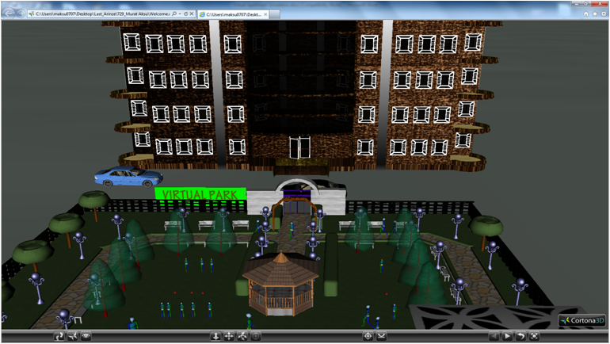
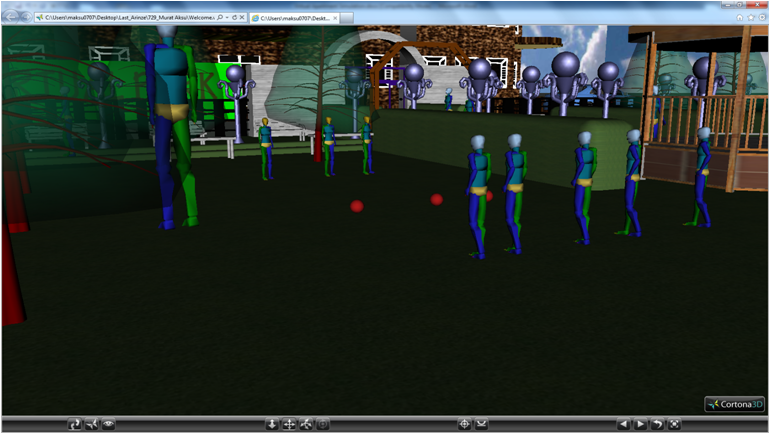 |
|
| 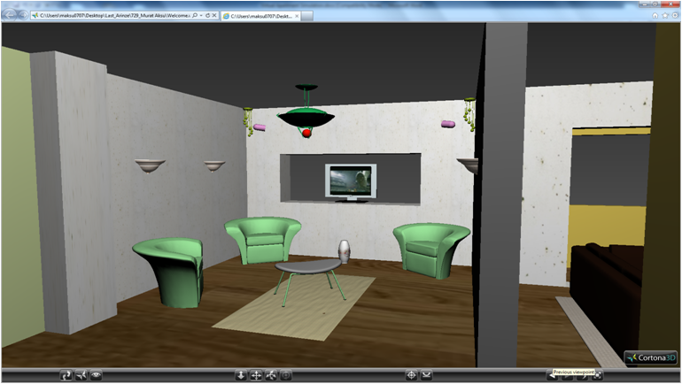 |
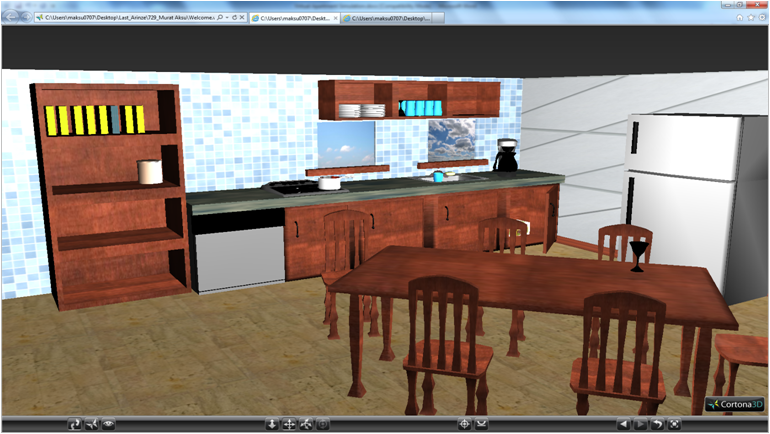 |
| Living Room |
Kitchen |
| 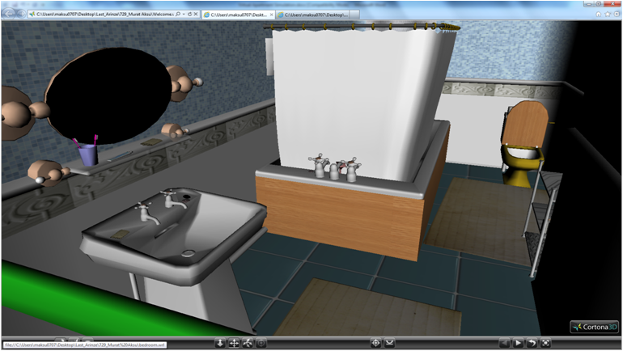 |
 |
| Bathroom |
Bedroom |
Project 2: Virtual Zoo
Students: Antoinette, Grogory Jones, Kayode |


|
The goal of this project is to create a Virtual Zoo that can be used as an educational tool to teach children about animals. The project also wanted to create an interaction between the animals and the humans in the zoo to make interacting with the virtual zoo more entertaining and to help children enjoy the process of learning. The virtual zoo for example, can help children learn the names of the animals, their characteristics, their habitat and their behaviors.
Click Here to VIEW THE THE ENTRANCE TO ZOO
Click Here to VIEW THE APE HOUSE
Click Here to VIEW THE AQUARIUM
Click Here to VIEW THE PENGUIN EXHIBIT
Click Here to VIEW THE REPTILE EXHIBIT
Presentation
Can be Viewed in Cortona 3 D player [Download] |

|
 |
Zoo entrance |
African Savanna, Dinosaur Exhibit and Small Mammals |
| |
|
Project 3: Fire Evacuation procedure at the International Washington Dulles Airport
Students: Titus Thomas and Jeff Ruffin |
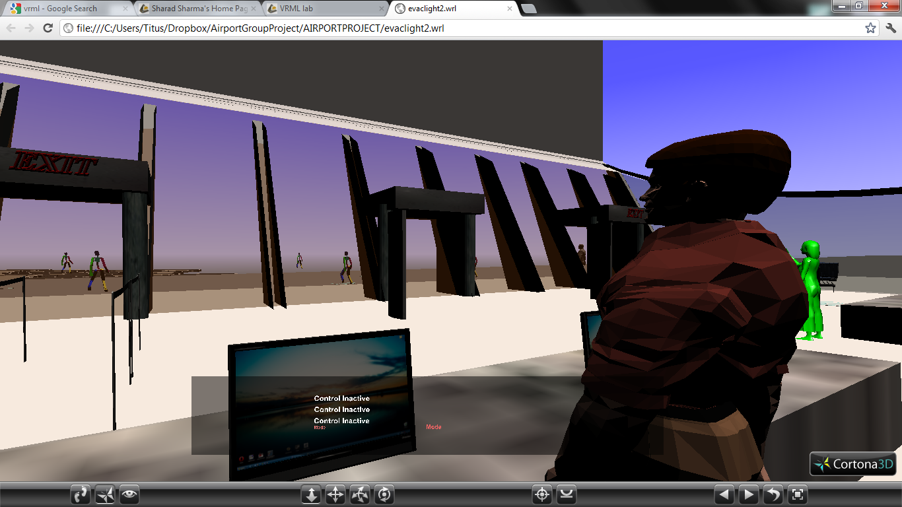
|
The goal of this group project was to
- Create a virtual simulation of a fire evacuation at Dulles airport.
- Through virtual simulation show effective ways to conduct a fire evacuation
- Show a room perspective as well as an individual perspective of a fire evacuation
One person in the environment will be able to be controlled be the user of this software while all other animation will be used to create reaction to a fire outbreak in this environment.
Click Here to VIEW The Airport Environment
Presentation
Project Report |
| 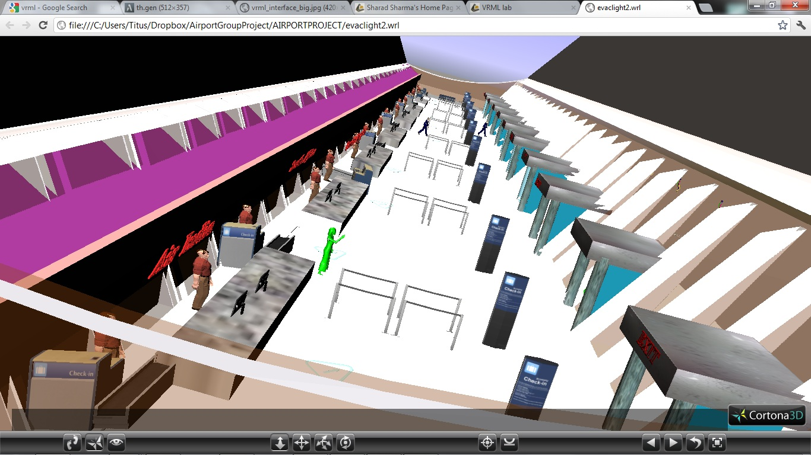 |
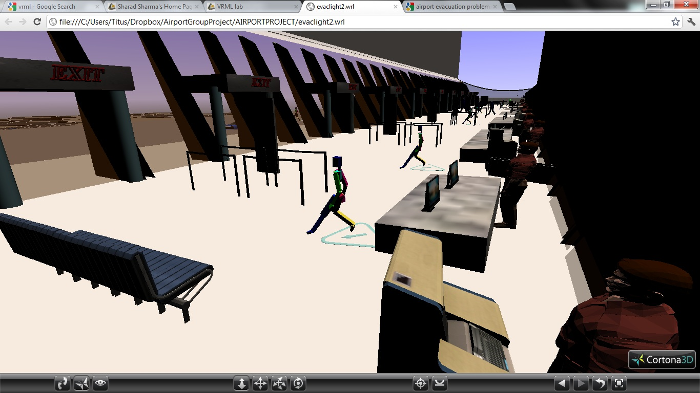 |
| Evacuation inside the airport |
Avatars Moving towards the exit |
| |
|
| |
|
Project 4: Course curriculum modules for Computer Science Students
Students: Saurabh Shirgaonkar, Sherrod Shelton, Antoine Lathon |

|
The goal of this project is to
create course currciculum modules for computer science students. Engineering and Mathematic courses are typically considered as difficult by college students and exhibit high failure rate. Due to the complication and abstract nature of computer hardware, it is a challenge for students to understand the principles and concepts related to computer organization. The section of museum called “Inside the Computer” make Computer Organization concepts easily understandable using the virtual tour. It provides knowledge of different motherboards, parts on motherboard, IC’s, computer peripherals and their working.
Click Here to VIEW PROJECT
Click Here to VIEW Power Supply
Click Here to VIEW
Presentation |
 |
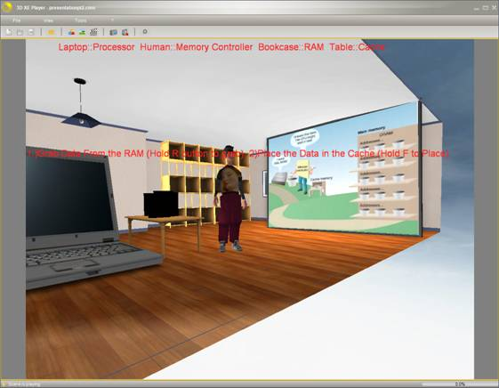 |
| Course module for showing power supply in the computer |
Course module for memory storage |
| |
|
Project 5: Multi-user VR Classroom for distance education
Students: Kevinsonh Ahuejere, Timothy Oladunni |
| 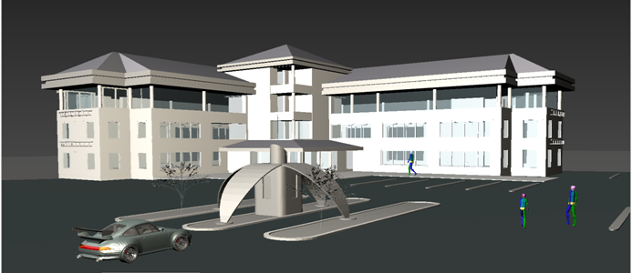 |
The goal of this project was to create a Virtual Computer Science University:
- Gives a prospective students and faculties a proper assessment of the university
- Makes the university more accessible to the public
Click Here to VIEW THE Computer Lab
Click Here to VIEW THE Computer lab 2
Click Here to VIEW THE Hallway
Click Here to VIEW THE Entrance to Buidling
Presentation |
| 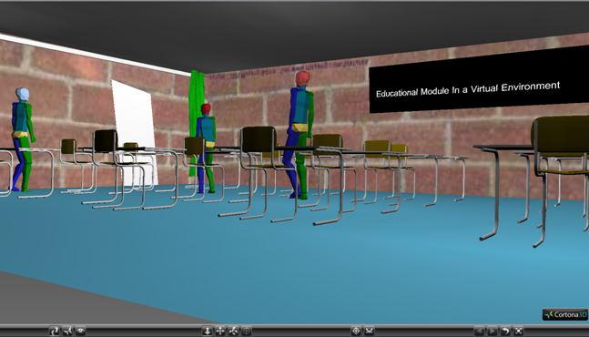 |
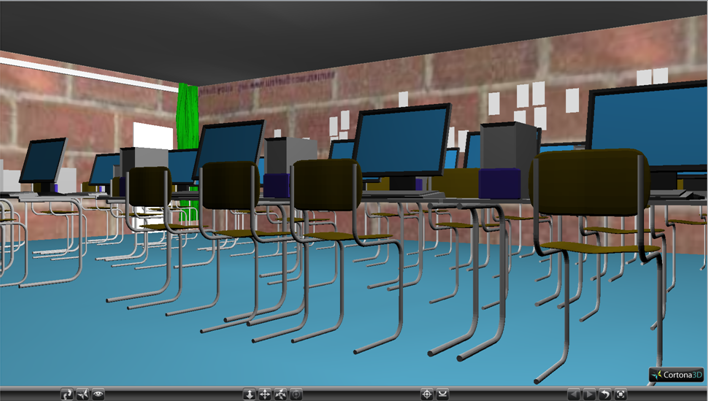 |
| Virtual Classoom |
Virtual Laboratory |
| |
|
|
|

{kind=link}
{kind=link}
{kind=link}
{kind=link}
{kind=link}
{kind=link}
{kind=link}
{kind=link}
{kind=link}
{kind=link}
{kind=link}
{kind=link}
{kind=link}
{kind=link}
{kind=link}